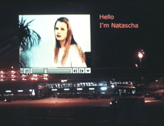

|
WRITING DESIRE
Ursula Biemann | CH 2001 | 26 min.
Format: DVD
Material: MiniDV
Original language : English
Script: Ursula Biemann
Camera: Ursula Biemann
Editing: Ursula Biemann
Sound: Ursula Biemann
Production: Ursula Biemann
www.geobodies.org
»Writing Desire« is about the rapport between words and the body and the creation of desire. The fast-paced video links the writing of romantic desire through electronic communication technologies, to the increasing disembodiment of sexuality and commercialized gender relations. The booming bride market emerges as a site where these simultaneous development converge: Shopping for another body that represents desire and pleasure. The video examines the various subjectivities, and their respective desires, emerging in the industrial world and in post-socialist and Southeast Asian countries. Technologized body images and digitized net.cast videos have turned the female body into a post-Fordist robot. - Ursula Biemann
Ursula Biemann is an artist, theorist and curator who has in recent years produced a considerable body of work on migration, mobility, technology and gender. In a series of internationally exhibited video projects, as well as in several books she has focused on the gendered dimension of migrant labour from smuggling on the Spanish-Moroccan border to migrant sex workers moving from the East to the West. Biemann's practice has long included discussions with academics and other practitioners, she has worked with anthropologists, cultural theorists, NGO members, architects, as well as scholars of aural and sonic culture. She researches at the Institute for Theory of Art and Design at HGK Zurich lectures at the CCC program of esba Geneva, and teaches seminars and workshops internationally.
Films: Performing the Border 1999 | Writing Desire 2000 | Remote Sensing 2001 | Europlex 2003 | Contained Mobility 2004 | Black Sea Files 2005
back
|